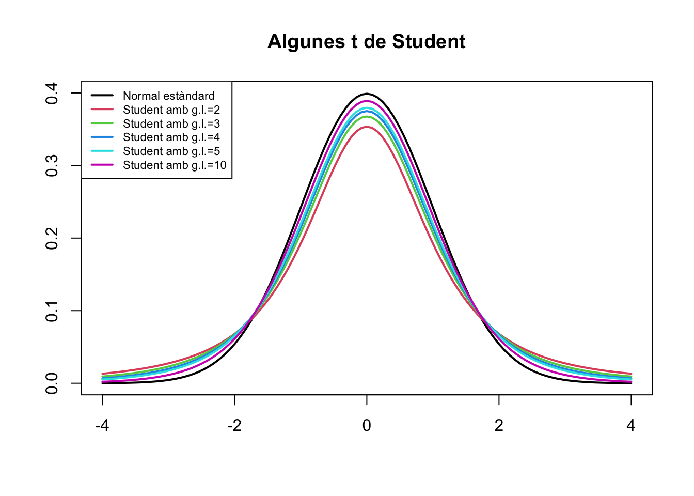
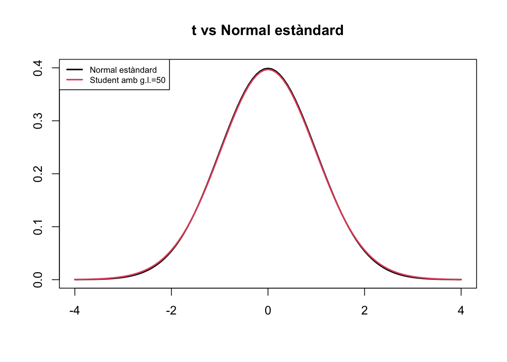

2.3 Famílies importants de variables aleatòries discretes
En aquesta secció descriurem tres famílies de variables aleatòries “distingides” que heu de conèixer:
- Binomial
- Hipergeomètrica
- Poisson
Cadascuna d’aquestes famílies tenen un tipus específic de funció de densitat que depèn d’un o diversos paràmetres.
De cadascuna d’aquestes famílies de variables heu de saber:
- Distingir quan una variable aleatòria és d’aquest tipus.
- Les seves propietats bàsiques, com ara quins són els seus paràmetres, quin és el seu valor esperat i si la seva densitat és simètrica o té una cua a qualque costat.
- Emprar R per calcular coses quan sigui necessari.
2.3.1 Variables aleatòries binomials
Un experiment de Bernoulli és una acció amb només dos resultats possibles, que identificam amb “Èxit” (\(E\)) i “Fracàs” (\(F\)), i de la qual, en principi, no podem predir el seu resultat per mor de la influència de l’atzar. Per exemple, llançar un dau cúbic i mirar si ha sortit un 6 (\(E\): treure un 6; \(F\): no treure un 6).
La probabilitat d’èxit \(p\) d’un experiment de Bernoulli és la probabilitat d’obtenir un èxit \(E\). És a dir, \(P(E)=p\). Naturalment, llavors, \(P(F)=1-p\). A l’exemple del llançament d’un dau, on \(E\) és treure un 6, \(p=1/6\).
Més exemples d’experiments de Bernoulli:
Llançar una moneda equilibrada i mirar si dóna cara.
- \(E\): donar cara
- \(p=1/2\)
Demanar a una persona si l’estadística l’avorreix.
- \(E\): que l’estadística l’avorreixi
- \(p\): la proporció de persones a qui avorreix l’estadística

Figura 2.3: Qui dels dos ets?
Una variable aleatòria de Bernoulli de paràmetre \(p\) (abreujadament, \(Be(p)\)) és una variable aleatòria \(X\) que consisteix a efectuar un experiment de Bernoulli i donar 1 si s’obté un èxit i 0 si s’obté un fracàs.
Una variable aleatòria binomial de paràmetres \(n\) i \(p\) (abreujadament, \(B(n,p)\)) és una variable aleatòria \(X\) que compta el nombre d’èxits \(E\) en una seqüència de \(n\) repeticions independents d’un mateix experiment de Bernoulli de probabilitat d’èxit \(p\). Independents significa que les \(n\) variables aleatòries de Bernoulli, una per a cada repetició de l’experiment de Bernoulli, són independents; és a dir, que el resultat de cada experiment en la seqüència no depèn dels resultats dels altres.
Direm a \(n\) la mida de les mostres i a \(p\) la probabilitat (poblacional) d’èxit. De vegades també direm d’una variable \(X\) de tipus \(B(n,p)\) que té distribució binomial de paràmetres \(n\) i \(p\).
Per exemple:
Una variable de Bernoulli \(Be(p)\) és una variable binomial \(B(1,p)\).
Llançar una moneda equilibrada 10 vegades i comptar les cares que surten és una variable binomial \(B(10,0.5)\).
Triar 20 estudiants de la UIB a l’atzar, l’un rere l’altre, permetent repeticions i cada tria independent de les altres, i mirar si al primer semestre han aprovat totes les assignatures o no, és una variable binomial \(B(20,p)\) amb \(p\) la proporció d’estudiants de la UIB que han aprovat totes les assignatures del primer semestre.
El tipus més comú de variables binomials que ens interessaran és aquest darrer:
Tenim el resultat següent.
Teorema 2.2 Si \(X\) és una variable \(B(n,p)\):
El seu domini és \(D_X=\{0,1,\ldots,n\}\)
La seva funció de densitat és \[ f_X(k)=\left\{\begin{array}{ll} \displaystyle\binom{n}{k}p^k(1-p)^{n-k} & \text{ si $k\in D_X$}\\ 0 & \text{ si $k \notin D_X$} \end{array} \right. \]
El seu valor esperat és \(E(X)=np\)
La seva variància és \(\sigma(X)^2=np(1-p)\)
Recordau que:
El factorial \(m!\) d’un nombre natural \(m\) és \(m!=m(m-1)\cdots 2\cdot 1\) si \(m\geqslant 1\). Si \(m=0\), es pren \(0!=1\).
El nombre combinatori \(\binom{n}{k}\), amb \(k,n\) nombres naturals tals que \(0\leqslant k\leqslant n\), és \[ \binom{n}{k}=\frac{\overbrace{n\cdot (n-1)\cdots (n-k+1)}^k}{k\cdot (k-1)\cdots 2\cdot 1}=\frac{n!}{k!(n-k)!} \] i ens dóna el nombre de subconjunts de \(k\) elements de \(\{1,\ldots,n\}\). Si \(k>n\) o \(k<0\), es pren \(\binom{n}{k}=0\).
Suposem que efectuam \(n\) repeticions consecutives i independents d’un experiment de Bernoulli de probabilitat d’èxit \(p\) i comptam el nombre d’\(E\)’s; direm \(X\) a la variable aleatòria resultant. Per seguir la demostració, si no us sentiu molt còmodes amb el raonament amb enes i kas abstractes, anau repetint-lo prenent, per exemple, \(n=4\).
Els possibles resultats són totes les paraules possibles de \(n\) lletres formades per \(E\)’s i \(F\)’s. Com que els experiments successius són independents, la probabilitat de cadascuna d’aquestes paraules és el producte de les probabilitats dels seus resultats individuals. Per tant, si una paraula concreta té \(k\) lletres \(E\) i \(n-k\) lletres \(F\) (s’han obtengut \(k\) èxits i \(n-k\) fracassos), la seva probabilitat és \(p^k(1-p)^{n-k}\), independentment de l’ordre en el qual hàgim obtengut els resultats.
Per calcular la probabilitat d’obtenir una seqüència amb \(k\) èxits, sumarem les probabilitats d’obtenir cadascuna de les seqüències de \(n\) lletres amb \(k\) \(E\)’s. Com que totes tenen la mateixa probabilitat, el resultat serà la probabilitat d’una paraula amb \(k\) \(E\)’s i \(n-k\) \(F\)’s multiplicada pel nombre total de paraules diferents amb \(k\) \(E\)’s i \(n-k\) \(F\)’s.
Ara, quantes paraules hi ha amb \(k\) \(E\)’s i \(n-k\) \(F\)’s? Cada una d’elles queda caracteritzada per les posicions de les \(k\) \(E\)’s, per tant hi ha tantes paraules d’aquestes com possibles eleccions de conjunts de \(k\) posicions per a les \(E\)’s. El nombre d’això darrer és el de possibles subconjunts de \(k\) elements (les posicions on hi haurà les \(E\)’s) de \(\{1,\ldots,n\}\), que és el nombre combinatori \(\binom{n}{k}\). Per tant ja tenim \[ P(X=k)=\binom{n}{k}p^k(1-p)^{n-k}. \]
A partir d’aquí, el càlcul del valor esperat i la variància és sumar \[ \begin{array}{l} \displaystyle E(X)=\sum_{k=0}^n k\cdot \binom{n}{k}p^k(1-p)^{n-k}\\ \displaystyle \sigma(X)^2=\sum_{k=0}^n k^2\cdot \binom{n}{k}p^k(1-p)^{n-k}-\Big(\sum_{k=0}^n k\cdot \binom{n}{k}p^k(1-p)^{n-k})^2 \end{array} \] Us podeu fiar de nosaltres, donen \(np\) i \(np(1-p)\), respectivament.
Si ho pensau, veureu que el valor de \(E(X)\) és l’“esperat”. Vegem, si preneu una mostra aleatòria de \(n\) subjectes d’una població en la qual la proporció de subjectes \(E\) és \(p\), quants subjectes \(E\) “esperau” obtenir en la vostra mostra? Doncs una proporció \(p\) de la mostra, és a dir \(p\cdot n\), no?
El tipus de teorema anterior és el que fa que ens interessi conèixer algunes famílies distingides freqüents de variables aleatòries. Si, per exemple, reconeixem que una variable aleatòria és binomial i coneixem els seus valors de \(n\) i \(p\) i sabem el teorema anterior, automàticament sabem la seva funció de densitat, i amb ella la seva funció de distribució, el seu valor esperat, la seva variància etc., sense necessitat de deduir tota aquesta informació cada vegada que trobem una variable d’aquestes.
Naturalment, conèixer les propietats de les variables aleatòries binomials només és útil si sabem reconèixer quan estam al davant d’una. Fixau-vos que en una variable aleatòria binomial:
Comptam quantes vegades ocorre un esdeveniment (l’èxit \(E\)) en una seqüència d’intents.
En cada intent, l’esdeveniment que ens interessa passa o no passa, sense grisos.
El nombre d’intents és fix, \(n\).
Cada intent és independent dels altres.
En cada intent, la probabilitat que passi l’esdeveniment que ens interessa és sempre la mateixa, \(p\).
Així, per exemple:
Una dona té 4 fills. La probabilitat que un fill sigui nina és fixa, 0.51. El sexe de cada fill és independent dels altres. Comptam quantes filles té.
És una variable binomial \(B(4,0.51)\).
En una aula hi ha 5 homes i 45 dones. Triam 10 estudiants, un rere l’altre i sense repetir-los, per fer-los una pregunta. Cada elecció és independent de les altres. Comptam quants homes hem interrogat.
No és una variable binomial: com que no podem repetir estudiants, en cada ronda la probabilitat de triar un home depèn del sexe dels estudiants triats abans que ell. Per tant la \(p\) no és la mateixa en cada elecció.
Per exemple, en la primera ronda la probabilitat de triar un home és 5/50=0.1. Ara, si en la primera ronda surt triat un home, la probabilitat que en la segona ronda tornem a triar un home es redueix a 4/49=0.0816, mentre que si en la primera elecció surt una dona, la probabilitat de triar un home en la segona ronda puja a 5/49=0.102.
En una aula hi ha 5 homes i 45 dones. Triam 10 estudiants, un rere l’altre però cada estudiant pot ser triat més d’una vegada, per a fer-los una pregunta. Cada elecció és independent de les altres. Comptam quants homes hem interrogat.
Ara sí que és una variable binomial \(B(10,0.9)\), ja que la probabilitat de triar un home no varia d’una ronda a la següent.
En una aula hi ha 5 homes i 45 dones. Triam estudiants un rere l’altre i cada estudiant pot ser triat més d’una vegada, per fer-los una pregunta. Cada elecció és independent de les altres. Comptam quants estudiants hem hagut de triar per arribar a interrogar 5 homes.
No és una variable binomial: no compta el nombre d’èxits en una seqüència d’un nombre fix d’intents, sinó quants intents hem necessitat per arribar a un nombre fix d’èxits.
En una aula hi ha 5 homes i 45 dones. Llançam una moneda equilibrada: si surt cara triam 10 estudiants i si surt creu en triam 20, per a fer-los una pregunta. Tant en un cas com en l’altre, els triarem un rere l’altre, cada estudiant podrà ser triat més d’una vegada i cada elecció serà independent de les altres. Comptam quants homes hem interrogat.
No és una variable binomial: el nombre d’intents no és fix.
La probabilitat que un dia de novembre plogui és d’un 32%. Triam una setmana de novembre i comptam quants dies ha plogut.
No és d’una variable binomial. Encara que a priori cada dia tengui la mateixa probabilitat de pluja, que plogui un dia no és independent que plogui l’anterior. Perquè fos binomial, hauríem d’haver triat 7 dies de novembre a l’atzar, permetent que sortissin repetits.
A Espanya hi ha 46,700,000 persones, de les quals un 11.7% són diabètics. Triam 100 espanyols diferents a l’atzar (de manera independent els uns dels altres) i comptam quants són diabètics.
No és binomial, pel mateix motiu que no ho era quan escollíem estudiants sense permetre repeticions. Però pràcticament sí que ho és, perquè les probabilitats gairebé no varien d’una elecció a la següent.
Per exemple, quan ja duim 99 individus escollits, la probabilitat de triar un individu concret dels que queden és \(1/(46700000-99)=2.141332\times 10^{-8}\) mentre que si permetem repeticions, aquesta probabilitat és \(1/46700000=2.141328\times 10^{-8}\). Coincideixen fins la dotzena xifra decimal.
En aquest cas farem la trampa de considerar-la binomial.
Vegem alguns gràfics de la funció de densitat de variables aleatòries binomials. Primer, per a \(n=10\) i diferents valors de \(p\).

Ara per a \(n=100\):

Com podeu veure, la moda d’una binomial \(B(n,p)\) és la seva mitjana \(np\) o, si aquest nombre no és enter, un dels dos enters que l’envolten.
Si \(p=0.5\), la funció de densitat és simètrica respecte de \(n/2\): com que \(E\) i \(F\) tenen la mateixa probabilitat, 0.5, la probabilitat de treure \(k\) \(E\)’s és la mateixa que la de treure \(k\) \(F\)’s, és a dir, la de treure \(n-k\) \(E\)’s.

En canvi, si \(p\neq 0.5\), la funció de densitat no és simètrica, com podeu veure als gràfics de més a dalt.
Per agilitzar els tests de COVID-19, s’ha proposat l’estratègia següent (anomenada pooled sample testing o simplement pooling). Unim grups de 10 mostres en una sola mostra i l’analitzam. Si dóna negatiu, serà senyal que totes la mostres originals eren negatives. Declararem llavors negatius els 10 subjectes de les mostres originals. Si dóna positiu, serà perquè almanco una de les mostres originals era positiva. En aquest cas, analitzarem les 10 mostres per separat.
Observau llavors que si les 10 mostres eren negatives, fem un sol test, mentre que si alguna mostra és positiva, en fem 11. Amb l’enfocament tradicional, un test per mostra i per avall, faríem sempre 10 tests.
Suposem que el test és exacte: dóna positiu sempre que ha de donar positiu i negatiu sempre que ha de donar negatiu. Sigui \(p\) la prevalença de la COVID-19 en un moment i població donats. Donades 10 mostres preses en aquest moment en aquesta població, quin és el valor esperat de tests que hem de realitzar? Si \(p\) fos petita, de l’ordre de l’1% al 5%, significaria el pooling un estalvi esperat considerable de tests?
Com efectuar càlculs amb una variable aleatòria d’una família donada?
Una possibilitat és usar una aplicació de mòbil o tauleta. La nostra preferida és Probability distributions, disponible tant per a Android com per a iOS.

Figura 2.4: L’apli Probability Distributions.
Una altra possibilitat és usar R. R coneix totes la distribucions de variables aleatòries importants; per exemple, per a R la binomial és binom. Aleshores
Afegint al nom de la distribució el prefix
d, tenim la seva funció de densitat: de la binomial seràdbinom.Afegint al nom de la distribució el prefix
p, tenim la seva funció de distribució: de la binomial,pbinom.Afegint al nom de la distribució el prefix
q, tenim els seus quantils: per a la binomial,qbinom.Afegint al nom de la distribució el prefix
r, tenim una funció que produeix mostres aleatòries de nombres amb aquesta distribució de probabilitat: per a la binomial,rbinom.
Aquestes funcions s’apliquen a l’argument de la funció i els paràmetres de la variable aleatòria en el seu ordre usual. Per exemple, per a la binomial, s’apliquen a (argument, \(n\), \(p\)). Per a més detalls sobre tot això, consultau la lliçó de R sobre el tema.
Vegem alguns exemples.
Si llançam 20 vegades un dau cúbic equilibrat, quina és la probabilitat de treure exactament 5 uns?
Diguem \(X\) a la variable aleatòria que compta el nombre d’uns en seqüències de 20 llançaments d’un dau equilibrat. És una variable binomial \(B(20,1/6)\). Ens demanen \(P(X=5)\), i aquesta probabilitat ens la dóna la funció de densitat de \(X\). És \(f_X(5)\):
dbinom(5,20,1/6)## [1] 0.1294103Si llançam 20 vegades un dau cúbic equilibrat, quina és la probabilitat de treure com a màxim 5 uns?
Amb les notacions anteriors, ens demanen \(P(X\leqslant 5)\), i aquesta probabilitat ens la dóna la funció de distribució de \(X\). És \(F_X(5)\):
pbinom(5,20,1/6)## [1] 0.8981595Si llançam 20 vegades un dau cúbic equilibrat, quina és la probabilitat de treure manco de 5 uns?
Amb les notacions anteriors, ens demanen \(P(X< 5)\), és a dir, \(P(X\leqslant 4)=F_X(4)\):
pbinom(4,20,1/6)## [1] 0.7687492Si llançam 20 vegades un dau cúbic equilibrat, quina és la probabilitat de treure 8 uns o més?
Amb les notacions anteriors, ens demanen \(P(X\geqslant 8)\). Com que el contrari de treure 8 uns o més és treure 7 uns o manco, tenim que \(P(X\geqslant 8)=1-P(X\leqslant 7)=1-F_X(7)\):
1-pbinom(7,20,1/6)## [1] 0.01125328- Si llançam 20 vegades un dau equilibrat, quin és el més petit nombre \(N\) d’uns per al qual la probabilitat de treure com a màxim \(N\) uns arriba al 25%? Ens demanen el més petit valor \(N\) tal que \(P(X\leqslant N)\geqslant 0.25\), i això per definició és el 0.25-quantil de \(X\):
qbinom(0.25,20,1/6)## [1] 2Vegem que en efecte \(N=2\) compleix el demanat: la probabilitat de treure com a màxim 2 uns és
pbinom(2,20,1/6)## [1] 0.3286591i la probabilitat de treure’n com a màxim 1 és
pbinom(1,20,1/6)## [1] 0.1304203Veiem per tant que amb 1 no arribam al 25% de probabilitat i amb 2 sí.
- Volem simular 50 rondes de llançar 20 vegades un dau equilibrat i comptar els uns, és a dir, volem una mostra aleatòria de mida 50 de la nostra variable \(X\):
rbinom(50,20,1/6)## [1] 2 5 1 6 2 3 5 5 7 4 3 4 4 2 3 5 3 1 3 4 3 3 4 2 5 4 4 3 6 2 7 4 2 2 6 3 8 4
## [39] 5 6 4 3 1 3 2 1 3 4 2 0Cada vegada que repetim aquesta instrucció segurament obtendrem una mostra aleatòria nova:
rbinom(50,20,1/6)## [1] 5 4 3 2 2 1 6 6 2 1 4 3 6 5 5 4 1 3 1 1 6 3 3 2 4 5 3 2 4 6 4 3 4 5 1 2 6 4
## [39] 4 3 3 5 2 1 3 5 5 4 0 1rbinom(50,20,1/6)## [1] 1 2 3 4 5 4 3 5 3 0 4 5 3 2 3 2 2 2 0 3 1 2 1 2 5 6 4 4 4 4 8 3 1 3 2 5 6 3
## [39] 0 5 3 1 3 5 2 4 3 4 1 2rbinom(50,20,1/6)## [1] 6 2 4 2 3 3 2 3 2 7 5 4 4 2 4 3 1 7 5 6 3 3 2 2 2 2 2 1 3 5 6 5 6 2 6 2 5 5
## [39] 3 2 4 4 2 2 4 8 4 5 4 42.3.2 Variables aleatòries hipergeomètriques
Recordau que el paradigma de variable aleatòria binomial és: tenc una població amb una proporció \(p\) de subjectes que satisfan una condició \(E\), en prenc una mostra aleatòria simple de mida \(n\) i compt el nombre de subjectes \(E\) en la meva mostra. Si canviam “mostra aleatòria simple” per “mostra aleatòria sense reposició”, la distribució de la variable aleatòria que obtenim és una altra: és hipergeomètrica.
Una variable aleatòria és hipergeomètrica (o té distribució hipergeomètrica) de paràmetres \(N\), \(M\) i \(n\) (abreujadament, \(H(N,M,n)\)) quan es pot identificar amb el procés següent. Tenim una població formada per \(N\) subjectes que satisfan una condició \(E\) i \(M\) subjectes que no la satisfan (per tant, en total, \(N+M\) subjectes), prenem una mostra aleatòria sense reposició de mida \(n\) i comptam el nombre de subjectes \(E\) en aquesta mostra.
Direm a \(N\) el nombre poblacional d’èxits, a \(M\) el nombre poblacional de fracassos i a \(n\) la mida de les mostres. Fixau-vos llavors que \(N+M\) és la mida total de la població i que \(N/(N+M)\) és la probabilitat poblacional d’èxit (la fracció de subjectes que satisfan \(E\) en el total de la població). Amb R, igual que la distribució binomial era binom, la distribució hipergeomètrica és hyper.
Tenim el resultat següent:
Teorema 2.3 Si \(X\) és una variable \(H(N,M,n)\):
El seu domini és \(D_X=\{0,1,\ldots,\text{min}(N,n)\}\)
La seva funció de densitat és \[ f_X(k)=\left\{\begin{array}{ll} \displaystyle\dfrac{\binom{N}{k}\cdot \binom{M}{n-k}}{\binom{N+M}{n}} & \text{ si $k\in D_X$}\\ 0 & \text{ si $k\notin D_X$} \end{array} \right. \]
El seu valor esperat és \(E(X)=\dfrac{nN}{N+M}\)
La seva variància és \(\sigma(X)^2=\dfrac{nNM(N+M-n)}{(N+M)^2(N+M-1)}\)
La demostració de la fórmula per a la densitat és senzilla, en termes de casos favorables partit per casos possibles. Vegem: \(f_X(k)\) és la probabilitat que un subconjunt de \(n\) subjectes (diferents) de la població contengui \(k\) subjectes \(E\) i \(n-k\) subjectes dels altres (en direm \(F\)).
Casos possibles: Tots els possibles subconjunts de \(n\) elements de la població. El nombre de tots els subconjunts de \(n\) elements d’una població de mida \(N+M\) és \(\binom{N+M}{n}\). Ja tenim el denominador.
Casos favorables: Tots els possibles subconjunts formats per \(k\) subjectes \(E\) i \(n-k\) subjectes \(F\). Cada un d’aquests subconjunts s’obté
- Triant un subconjunt de \(k\) subjectes \(E\): com que n’hi ha \(N\), d’aquests subconjunts n’hi ha \(\binom{N}{k}\)
- Triant un subconjunt de \(n-k\) subjectes \(F\): com que n’hi ha \(M\), d’aquests subconjunts n’hi ha \(\binom{M}{n-k}\)
- Per cada tria d’un subconjunt de \(k\) subjectes \(E\) i un subconjunt de \(n-k\) subjectes \(F\), obtenim un subconjunt “favorable” diferent. Per tant, el seu nombre és el producte \(\binom{N}{k}\cdot\binom{M}{n-k}\)
Això ens dóna el numerador.
Fixau-vos que si diem \(p\) a la probabilitat poblacional d’èxit, \(p=N/(N+M)\), llavors \[ E(X)=np. \] És la mateixa fórmula que per a les variables binomials \(B(n,p)\) (i si ho pensau una estona veureu que, un altre cop i pel mateix argument, és el que la intuïció ens diu que ha de valer). D’altra banda, si diem \(\mathbf{P}\) a la mida total de la població, \(\mathbf{P}=N+M\), llavors \[ \sigma(X)^2=n\cdot\dfrac{N}{N+M}\cdot\dfrac{M}{N+M}\cdot\frac{N+M-n}{N+M-1}=np(1-p)\cdot\dfrac{\mathbf{P}-n}{\mathbf{P}-1} \] que és la variància d’una variable \(B(n,p)\) multiplicada per un factor de correcció a causa del fet que ara prenem mostres sense repetició i la variància és més petita que si les prenem amb repetició. A l’arrel quadrada d’aquest factor \[ \sqrt{\frac{\mathbf{P}-n}{\mathbf{P}-1}} \] se l’anomena factor de població finita.
Fixau-vos que si \(\mathbf{P}\) és molt més gran que \(n\), tendrem que \(\mathbf{P}-n\approx \mathbf{P}-1\) i per tant \((\mathbf{P}-n)/(\mathbf{P}-1)\approx 1\) i la variància de la hipergeomètrica serà aproximadament la de la binomial. Això és consistent amb el que ja hem comentat: si la població és molt més gran que la mostra, prendre les mostres amb o sense reposició no afecta massa a les mostres obtengudes, per la qual cosa la distribució de probabilitat ha de ser molt semblant. Recordau els exemples següents:
A Espanya hi ha 46,700,000 persones, de les quals un 11.7% són diabètics. Triam 100 espanyols diferents i comptam quants són diabètics.
Aquesta variable és, en realitat, hipergeomètrica amb \(N=0.117\cdot 46700000=5463900\), \(M=46700000-N=41236100\) i \(n=100\), però en la pràctica la consideram binomial \(B(100,0.117)\). El quocient \((\mathbf{P}-n)/(\mathbf{P}-1)\) és \[ \frac{46700000-100}{46700000-1}=0.9999979 \] Pràcticament 1. En canvi:
En una aula hi ha 5 homes i 45 dones. Triam 10 estudiants, un rere l’altre i sense repetir-los, per fer-los una pregunta. Cada elecció és independent de les altres. Comptam quants homes hem interrogat.
Aquesta variable és \(H(5,45,10)\). El quocient \((\mathbf{P}-n)/(\mathbf{P}-1)\) en aquesta cas no és aproximadament 1: dóna \[ \frac{50-10}{50-1}=0.8163 \] No és correcte aproximar-la per una binomial \(B(10,0.1)\).
El gràfic següent compara la funció de densitat d’una variable \(B(10,0.1)\) amb les de variables hipergeomètriques \(H(5,45,10)\), \(H(50,450,10)\) i \(H(5000,45000,10)\) perquè vegeu com a mesura que la mida de la població creix (mantenint constant la proporció poblacional d’èxits), la distribució hipergeomètrica s’aproxima a la binomial.

2.3.3 Variables aleatòries de Poisson
Una variable aleatòria \(X\) és de Poisson (o té distribució de Poisson) de paràmetre \(\lambda>0\) (abreujadament, \(Po(\lambda)\)) quan:
El seu domini és \(D_X=\mathbb{N}\), el conjunt de tots els nombres naturals.
La seva funció de densitat és \[ f_X(k)=\left\{\begin{array}{ll} e^{-\lambda}\cdot \dfrac{\lambda^k}{k!} & \text{ si $k\in \mathbb{N}$}\\ 0 & \text{ si $k \notin \mathbb{N}$} \end{array} \right. \]
Per a R, la distribució de Poisson és pois.
Teorema 2.4 Si \(X\) és una variable \(Po(\lambda)\), aleshores \(E(X)= \sigma(X)^2= \lambda\).
És a dir, el paràmetre \(\lambda\) d’una variable de Poisson és el seu valor esperat, i coincideix amb la seva variància.
Us deveu estar demanant: per a què ens serveix definir una variable de Poisson mitjançant la seva densitat, si el que ens interessa és poder classificar una variable com a Poisson (o binomial, o hipergeomètrica etc.) per a així saber “gratis” la seva densitat? La resposta és que la família de Poisson inclou un tipus de variables aleatòries molt freqüent que tot seguit descrivim.
Suposem que tenim un tipus d’objectes que poden donar-se en una regió contínua de temps o espai. Per exemple, defuncions de persones per una determinada malaltia en el decurs del temps, exemplars d’una espècie de planta en un terreny, mutacions en bocins de cromosoma, o nombres de bacteris en bocins d’una superfície.
Suposem a més que les aparicions d’aquests objectes satisfan les propietats següents (per simplificar el llenguatge, hi suposarem que observam aparicions d’aquests objectes en el temps; si es tracta d’una variable que compta objectes en regions de l’espai, canviau-hi “instant” per “punt”):
Les aparicions dels objectes són aleatòries: en cada instant, un objecte es dóna, o no, a l’atzar, amb una probabilitat fixa i constant.
Les aparicions dels objectes són independents: que es doni un objecte en un instant concret, no depèn que s’hagi donat o no un objecte en un altre instant.
Les aparicions dels objectes no són simultànies: és pràcticament impossible que dos objectes d’aquests es donin en el mateix instant exacte, mesurat amb precisió infinita.
Per exemple, quan el que compten ocorre a l’atzar, són variables de Poisson:
El nombre de malalts admesos en urgències en un dia (o en 12 hores, o en una setmana…)
El nombre de defuncions per una malaltia concreta en un dia (o en una setmana, o en un any…)
El nombre d’albiraments de dofins en una hora durant un vol d’inspecció
El nombre de bacteris en un quadrat d’1 cm de costat (o d’1 m de costat…)
Fixau-vos que aquest tipus de coneixement ens serveix per a dues coses:
Si sabem que aquestes variables són de Poisson, coneixem la seva densitat i per tant podem calcular el que volguem per a elles.
Si les dades que observam haurien de seguir una distribució de Poisson però sembla que no (per exemple, perquè la seva variància sigui molt diferent de la seva mitjana, tan diferent que sigui difícil de creure que la mitjana i la variància poblacionals siguin iguals), llavors és senyal que qualque cosa “estranya” està passant que afecta la seva aparició.
Exemple 2.8 Observau la diferència entre les dues variables següents:
Nombres mensuals de defuncions per un tipus de càncer en un país. El moment exacte de les defuncions es produeix a l’atzar, segurament mai no es donen dues defuncions exactament en el mateix instant amb precisió infinita, i les defuncions es produeixen de manera independent. És de Poisson.
Nombres mensuals de defuncions per una malatia infecciosa en un país. Un altre cop, el moment exacte de les defuncions es produeix a l’atzar i segurament mai no es donen dues defuncions exactament en el mateix instant amb precisió infinita. Però les infeccions no són independents, precisament perquè es tracta d’una malaltia infecciosa, i per tant les defuncions tampoc: com ens hem cansat d’observar amb la COVID-19, en un mateix cluster de la malaltia es poden produir diverses morts associades. No és de Poisson.
Vegem alguns gràfics de la funció de densitat de variables aleatòries de Poisson.

Com veieu, la densitat d’una variable Poisson és asimètrica, amb un màxim al voltant de \(\lambda\) i una cua a la dreta, però a mida que \(\lambda\) creix, l’asimetria va minvant.